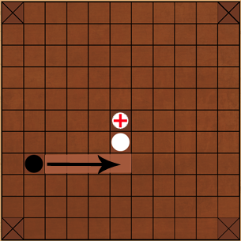

Player 1

waiting...
Black
THE RULES
Two players may participate. One player plays the king's side, with a king and his defenders, and the other player plays the attackers. There are twelve defenders and twenty-four attackers.
The game is played on a board with 11×11 squares and with the below initial set-up.
The central square, called the throne, and the four squares in the corners are restricted and may only be occupied by the king. The king is able to re-enter the throne, and all pieces may pass the throne when it is empty. The four corner squares are hostile to all pieces, which means that they can replace one of the two pieces taking part in a capture. The throne is always hostile to the attackers, but only hostile to the defenders when it is empty.
The objective for the king's side is to move the king to any of the four corner squares. In that case, the king has escaped and his side wins. The attackers win if they can capture the king before he escapes.
The attackers' side moves first, and the game then proceeds by alternate moves. All pieces move any number of vacant squares along a row or a column, like a rook in chess.
All pieces except the king are captured if they are sandwiched between two enemy pieces, or between an enemy piece and a hostile square, along a column or a row. The two enemy pieces should either be on the square above and below or on the square to the left and to the right of the attacked piece. A piece is only captured if the trap is closed by a move of the opponent, and it is, therefore, allowed to move in between two enemy pieces. A captured piece is removed from the board and is no longer active in the play. The king may take part in captures.

The king himself is captured when the attackers surround him in all four cardinal points. When he is on a square next to the throne, the attackers must occupy all surrounding squares in the four points of the compass except the throne.
The king cannot be captured on the edge, UNLESS he is the only white piece remaining on the board and is completely surrounded by black.
Player 2
waiting...
White